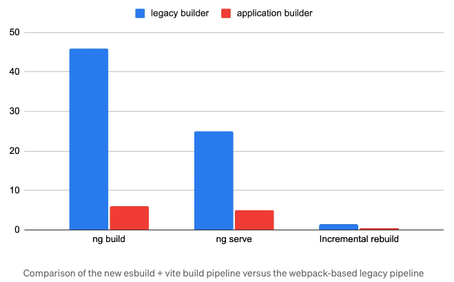

<div class="base-container">
  <div class="title">{{ title }}</div>

  <!-- Introduction -->
  <app-section-container>
    <div class="title">Introduction</div>
    <div class="description-container">
      <div class="item">
        Angular began to support esbuild from 
        <a href="https://glistening-cupcake-ead467.netlify.app">
          Angular v14 (Experimental Feature)
        </a> 
          and 
        <a href="https://marvelous-gnome-0802fa.netlify.app/#/esbuild">
          Angular v16 (Developer Preview)
        </a>.
      </div>
      <div class="item">
        In v17, esbuild Supported + Vite is out of the Developer Preview and enabled by the default. With SSR & SSG you can observe up to 87% speed improvement in ng build and 80% faster edit-refresh loop in for ng serve.
        <a href="https://blog.angular.io/introducing-angular-v17-4d7033312e4b">(reference)</a>
      </div>
    </div>
    <div class="image-container">
      
    </div>
  </app-section-container>

  <!-- reference -->
  <app-section-container>
    <div class="title">Reference</div>
    <div class="content-container">
    </div>
  </app-section-container>
</div>